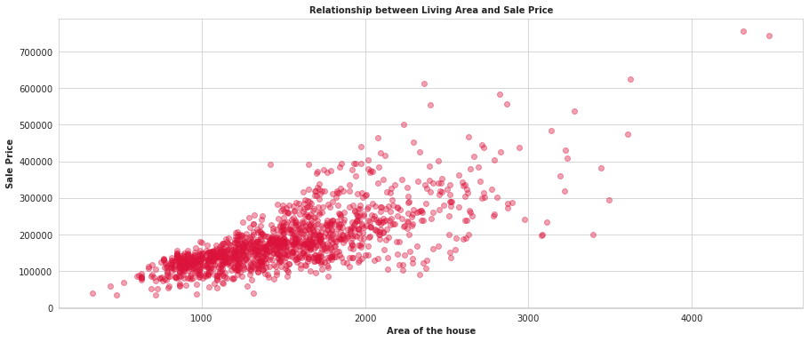
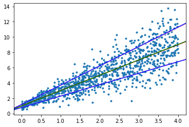

Variance Estimation in Heteroscedastic Regression
Posted on Mon 29 August 2022 in Programming
Motivation
Most linear regression models assume
$$y^{i} \approx \mathcal{N}(\theta^T x^{i}, \sigma^2)$$
The standard closed form for this, obtained via finding the MLE estimate, gives $(X^T X)^{-1} X^T Y$, where $X$ is the example matrix of shape $(m,n)$ and $Y$ is the label vector of shape $(n,1)$. Note that $m$ is the number of training examples and $n$ is the number of features.
However, the variance need not always be constant. Consider a model where the variance is varying linearly (or rather just increasing) with $x$: an example would be the House prices dataset

While there are feature transformations that would make this less heteroscedastic, this article focuses on learning the variance parameters, so along with our regression estimate, we can provide a variance estimate as well
The Model
We assume that the standard deviation (not variance) is a linear function of $x$
$$y^{i} \approx \mathcal{N}(\theta_m^T x^{i}, (\theta_v^T x^{i})^2)$$
The log-likelihood function is hence
$$\mathcal{LL}(\theta_m, \theta_v) = -\frac{m}{2} \log 2\pi - \sum_{i=1}^m \log \theta_v^T x^{i} - \frac{1}{2} \sum_{i=1}^m \frac{(y^{i} - \theta_m^T x^{i})^2}{(\theta_v^T x^{i})^2}$$
Differentiating with respect to $\theta_v$ gives us the gradient for $\theta_v$:
$$\frac{\partial \mathcal{LL}}{\partial \theta_v} = - \sum_{i=1}^m \frac{x^{i}}{\theta_v^T x^{i}} + \sum_{i=1}^m x^{i} \frac{(y^{i} - \theta_m^T x^{i})^2}{(\theta_v^T x^{i})^3}$$
Rearranging this gives us, in a matrix form,
$$\frac{\partial \mathcal{LL}}{\partial \theta_v}= X^T \left( \frac{E^2 - S^2}{S^3} \right)$$
Where $X$ is our example matrix, $E$ is the sum of squared error vector and $S$ is the standard deviation vector. This is a nice, concise form that we can use in our code. However, because of the $V$ term in the denominator, I couldn't obtain a closed form for this, and had to do gradient descent on the parameters. Even getting into second derivative methods was getting a bit tedious. If you do find a closed form, let me know :)
The derivative with respect to $\theta_m$ is pretty standard: we get
$$\frac{\partial \mathcal{LL}}{\partial \theta_m} = \sum_{i=1}^m x^{i} \frac{(y^{i} - \theta_m^T x^{i})}{(\theta_v^T x^{i})^2}$$
An Implementation
Implementation was fairly straightforward, using gradient descent, and it converged nicely to some generated data
